[冒險家的戒指] 完整任務路線
任務流程
-
01師父的擔憂
等級 30 以上冒險者先找自己的職業師父，接著前往魔法森林找漢斯，開始調查古老戒指的線索。
漢斯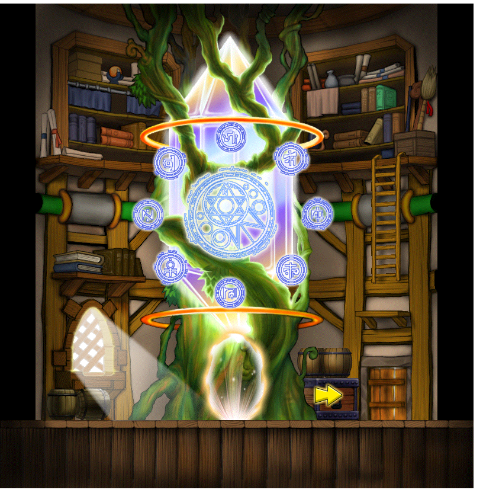
魔法森林圖書館 武術教練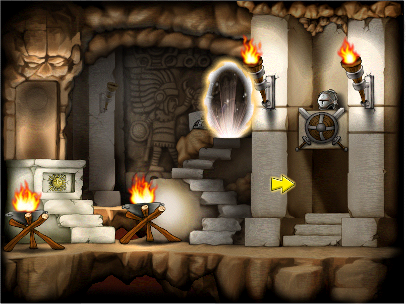
勇士聖殿 赫麗娜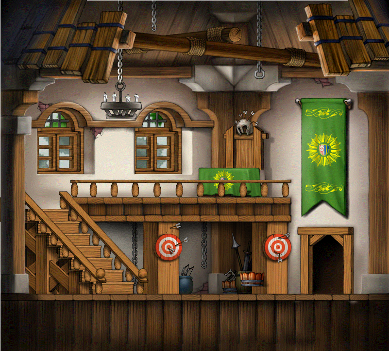
弓箭手培訓中心 達克魯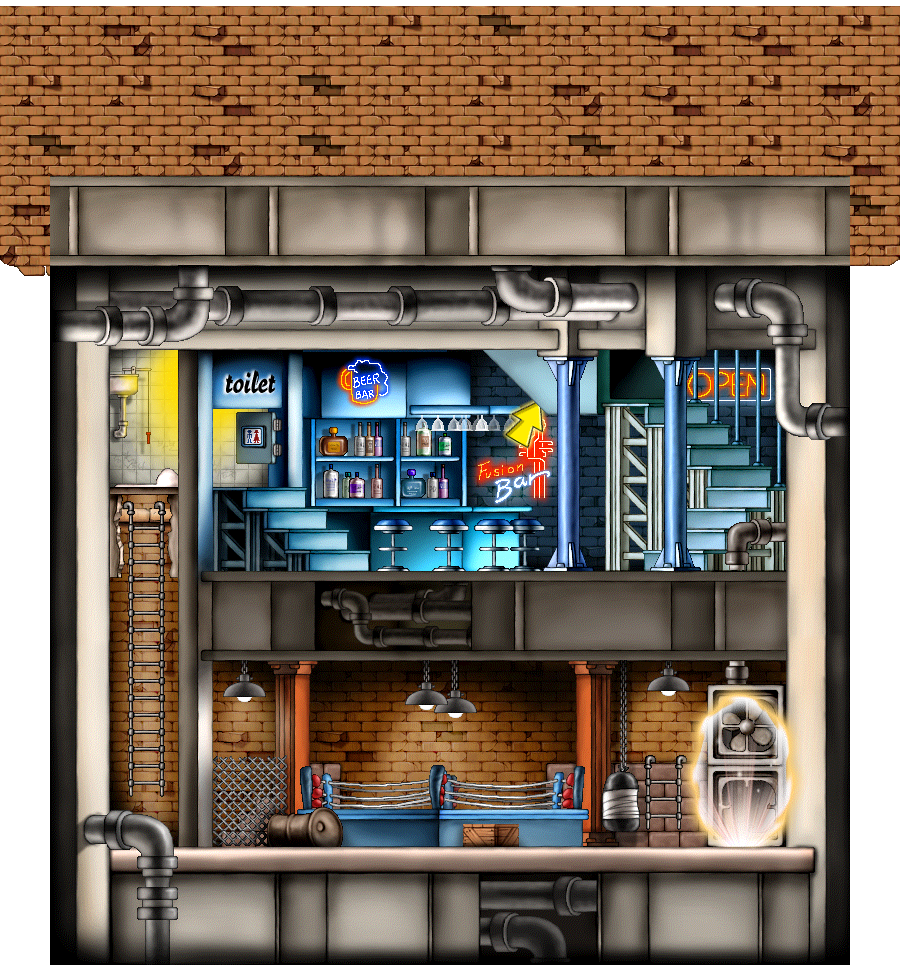
墮落城市酒吧 卡伊琳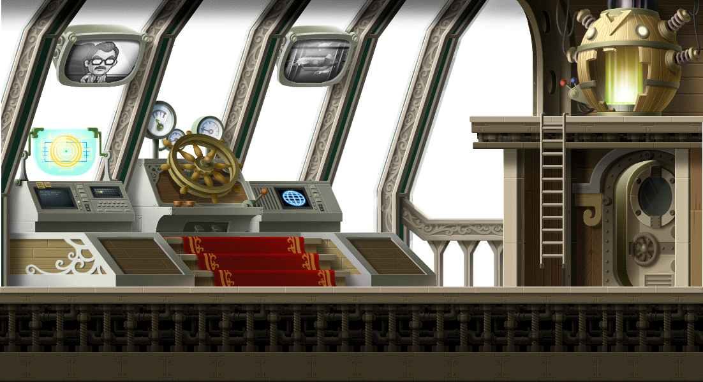
鯨魚號航海室 -
02妖精們的古書
依序拜訪妖精艾溫、羅雯、瑪麗，進入廢棄的妖精圖書館取得妖精的古書，再回報漢斯。
艾溫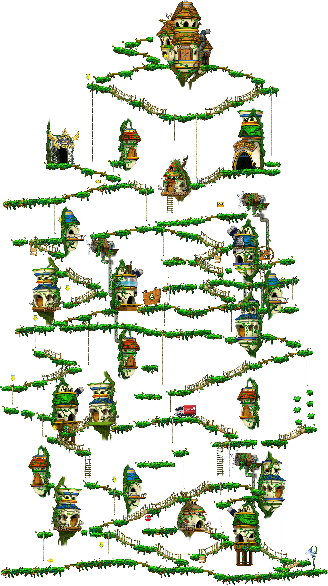
魔法森林 羅雯魔法森林 瑪麗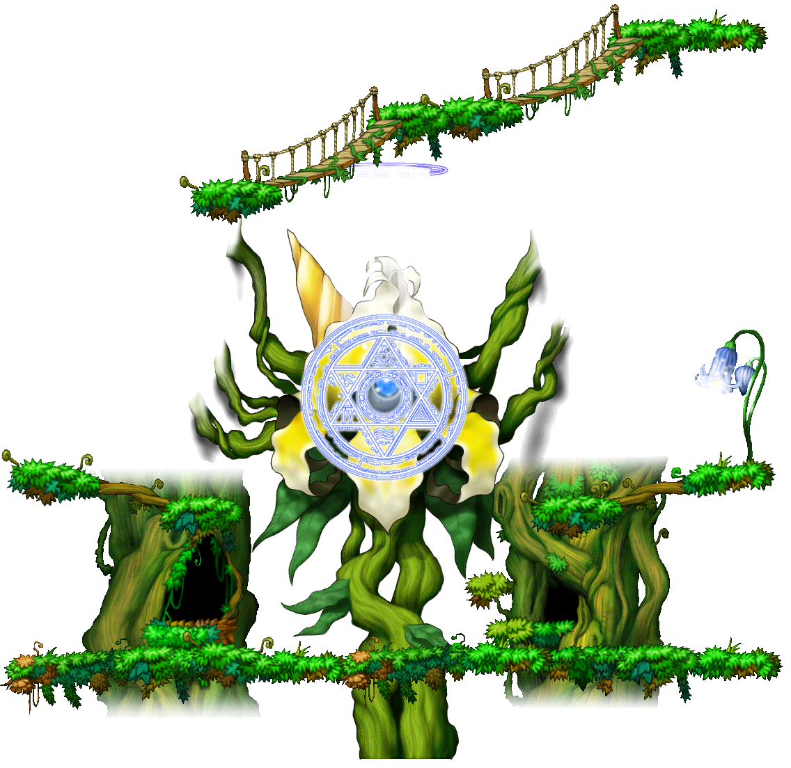
生命之林 漢斯魔法森林圖書館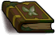
古書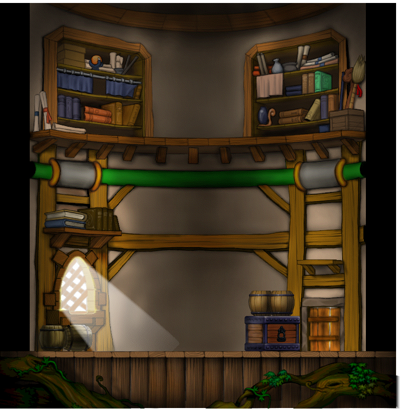
廢棄的妖精圖書館從魔法森林出發
魔法森林：往魔法森林南郊→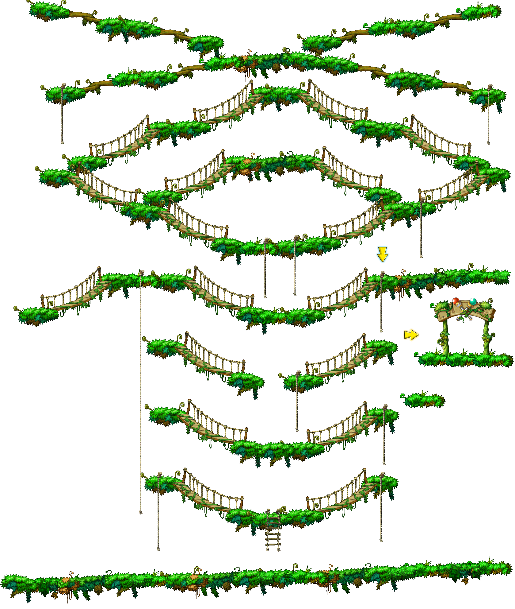
魔法森林南郊：往智慧森林→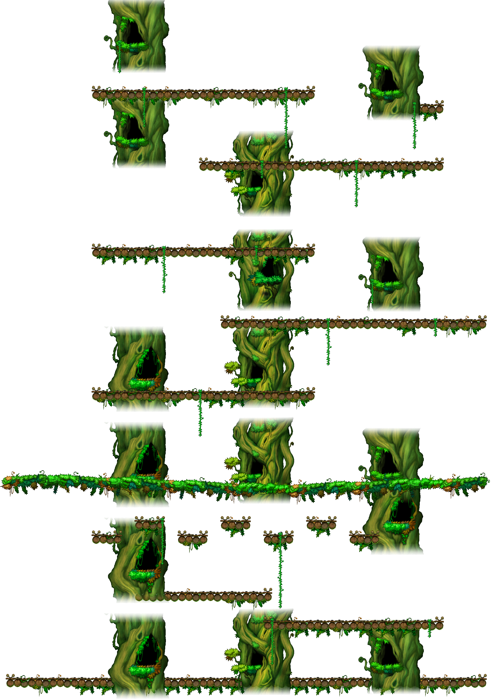
智慧森林：進入樹林底層→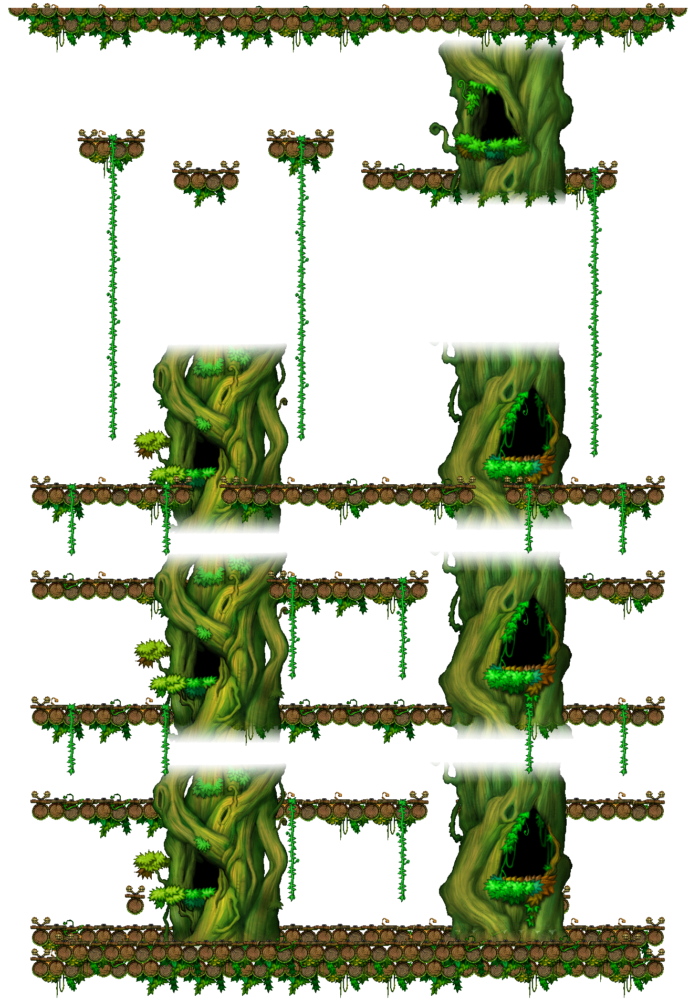
樹林底層：進入廢棄的妖精圖書館→廢棄的妖精圖書館：廢棄的古書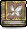
妖精的古書 x1 -
03生命能量①EXP 30,000
找漢斯接第一段生命能量任務，打綠水靈收集生命氣息。
綠水靈的生命氣息 x30
任務道具，接取任務後才開始掉落；綠水靈漢斯魔法森林圖書館 綠水靈完成後需等待 10 分鐘，才可接取生命能量②。
-
04生命能量②EXP 30,000
10 分鐘後再找漢斯接第二段生命能量任務，打黑肥肥收集生命氣息。
 黑肥肥的生命氣息 x30
黑肥肥的生命氣息 x30
任務道具，接取任務後才開始掉落；黑肥肥漢斯魔法森林圖書館 黑肥肥完成後需等待 10 分鐘，才可接取生命能量③。
-
05生命能量③EXP 30,000
再等 10 分鐘後找漢斯接第三段生命能量任務，打刺菇菇收集生命氣息。
 刺菇菇的生命氣息 x30
刺菇菇的生命氣息 x30
任務道具，接取任務後才開始掉落；刺菇菇漢斯魔法森林圖書館 刺菇菇完成後需等待 10 分鐘，才可接取「尋找不屈的執念」。
-
06尋找不屈的執念
漢斯指向大海，先到維多利亞港找坤、百京、特奧；之後轉往勇士之村找武術教練與酋長。
漢斯魔法森林圖書館 坤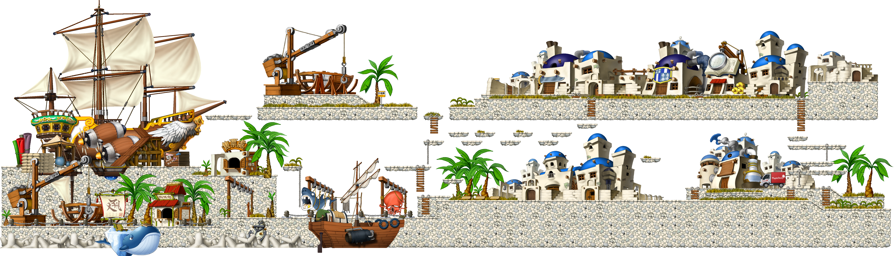
維多利亞港 百京維多利亞港 特奧維多利亞港 武術教練勇士聖殿 酋長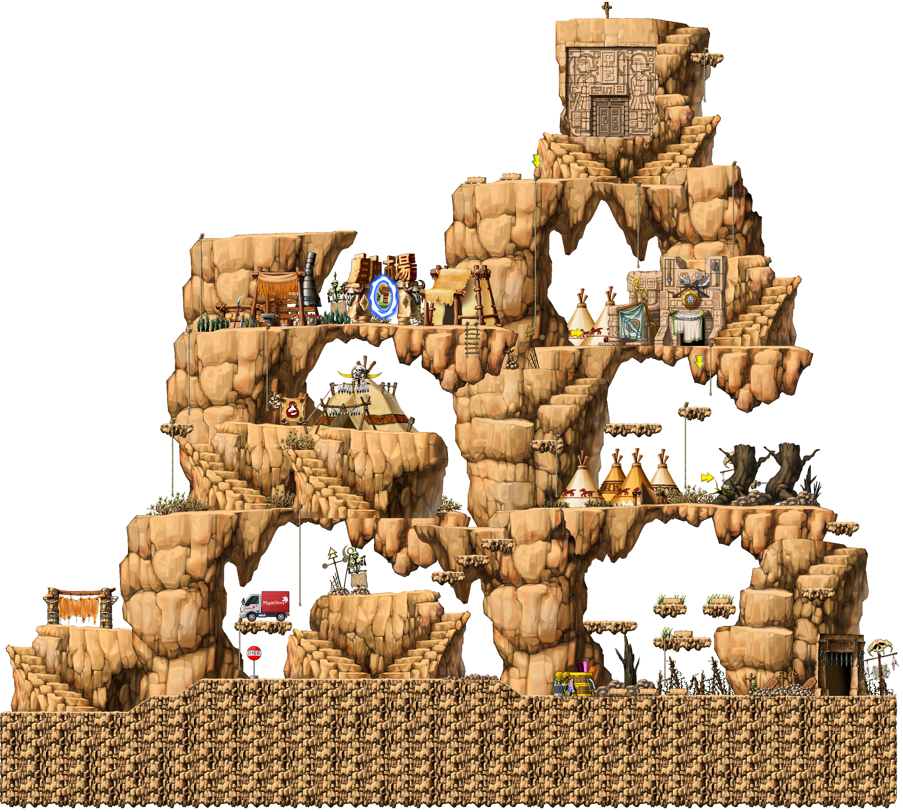
勇士之村 -
07堅不可摧的家EXP 30,000
酋長先請你幫忙修復被旋風吹壞的房屋牆壁。這是修屋任務，和下一段收集執念是不同任務。
酋長勇士之村樹枝 x50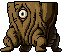
木妖、樹妖王 葉子 x50
黑木妖、樹妖王 木柴 x50
斧木妖、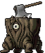
黑斧木妖、樹妖王完成後要等待 1 天（24 小時），再回去找酋長接「不屈的執念」。
-
08不屈的執念EXP 50,000
24 小時後回去找酋長，接取真正的執念收集任務，打黑斧木妖取得永不折斷的執念。
永不折斷的執念 x50
任務道具，接取任務後才開始掉落；黑斧木妖酋長勇士之村 黑斧木妖 -
09第一個材料
將永不折斷的執念交給漢斯，完成第一個材料。
永不折斷的執念 x50
交給漢斯；黑斧木妖漢斯魔法森林圖書館 -
10等待者的祈禱
回到漢斯後前往弓箭手村找赫麗娜。她需要時間思考，先去幫村民處理請求。
漢斯魔法森林圖書館 赫麗娜弓箭手培訓中心 長老斯坦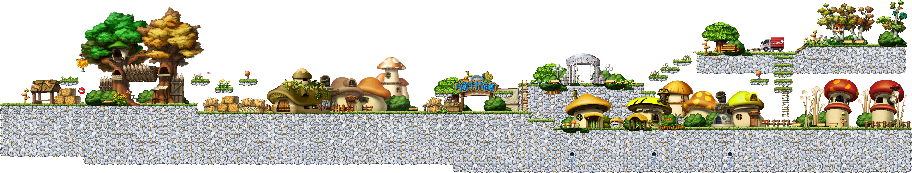
弓箭手村 麗娜弓箭手村 卡蜜拉弓箭手村 -
11需要幫助的人們EXP 60,000
先幫長老斯坦與麗娜準備給年輕冒險家的食物。
長老斯坦弓箭手村 麗娜弓箭手村菇菇寶貝傘 x50
菇菇寶貝 綠水靈珠 x10
綠水靈 風獨眼獸之尾巴 x50
風獨眼獸 -
12遺失的藥EXP 30,000
卡蜜拉說藥被藍菇菇搶走，接取此任務後去打藍菇菇找回遺失的藥。
卡蜜拉遺失的藥 x1
任務道具，接取任務後才開始掉落；藍菇菇卡蜜拉弓箭手村 藍菇菇 -
13承載心意的珠子
回到赫麗娜取得空珠子，拜訪長老斯坦、麗娜、卡蜜拉，把居民們的心意注入珠子，再交給漢斯完成第二個材料。
赫麗娜弓箭手培訓中心 長老斯坦弓箭手村 麗娜弓箭手村 卡蜜拉弓箭手村 漢斯魔法森林圖書館承載心意的空珠子 x1
赫麗娜交付 承載心願的閃耀珠子 x1
交給漢斯 -
14承載生命的容器
漢斯需要能盛放生命氣息的容器，前往墮落城市找達克魯。
漢斯魔法森林圖書館 達克魯墮落城市酒吧 -
15達克魯的考試EXP 50,000
達克魯要確認你是否有資格持有戒指，到沼澤地帶打鱷魚取得牙齒。
鱷魚的牙齒 x100
任務道具，接取任務後才開始掉落；鱷魚達克魯墮落城市酒吧 鱷魚完成考試後，達克魯會請你等待 3 天。
-
16純度極高的原石
3 天後回去找達克魯，取得冒險家的戒指原石，再帶回去交給漢斯。
冒險家的戒指原石 x1
達克魯交付達克魯墮落城市酒吧 漢斯魔法森林圖書館 -
17不滅的生命意志①
漢斯將生命氣息注入原石後，前往奇幻村找薩比特拉瑪，再去找克利斯拉瑪詢問不滅的生命意志。
冒險家的戒指原石 x1 永不熄滅的生命意志 x1
下一段尋找；殭屍菇菇漢斯魔法森林圖書館 薩比特拉瑪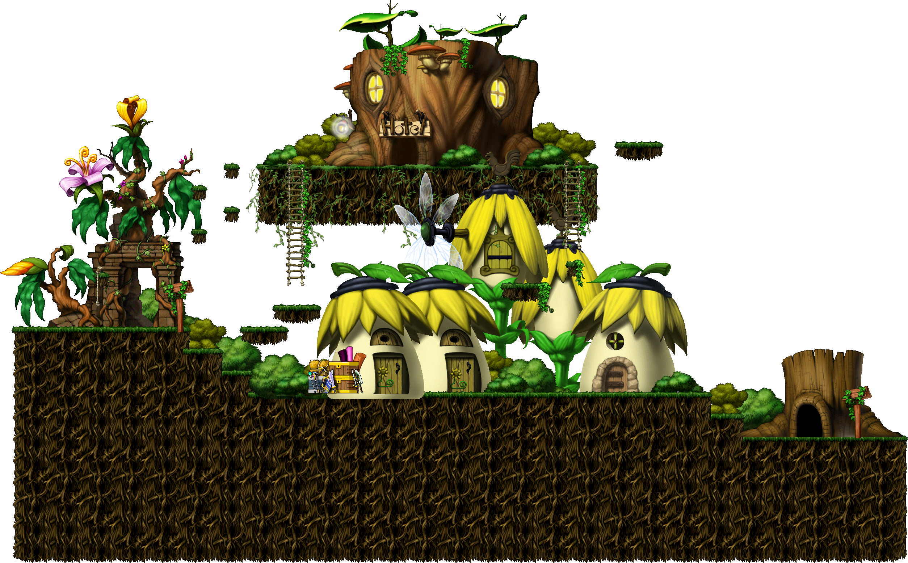
奇幻村 克利斯拉瑪奇幻村 -
18不滅的生命意志②EXP 50,000
接取後到螞蟻洞深處打殭屍菇菇，取得永不熄滅的生命意志。
永不熄滅的生命意志 x1
任務道具，接取任務後才開始掉落；殭屍菇菇殭屍菇菇此道具為任務道具，接取任務後才會開始掉落。
-
19最後的材料
將永不熄滅的生命意志交給克利斯拉瑪後，回到漢斯。漢斯會開始融合材料，並讓你前往鯨魚號。
永不熄滅的生命意志 x1
交給克利斯拉瑪；殭屍菇菇克利斯拉瑪奇幻村 漢斯魔法森林圖書館 -
20前往鯨魚號
到鯨魚號找卡伊琳，再去找湯寶寶。融合期間需要完成四次特餐任務。
卡伊琳鯨魚號航海室 湯寶寶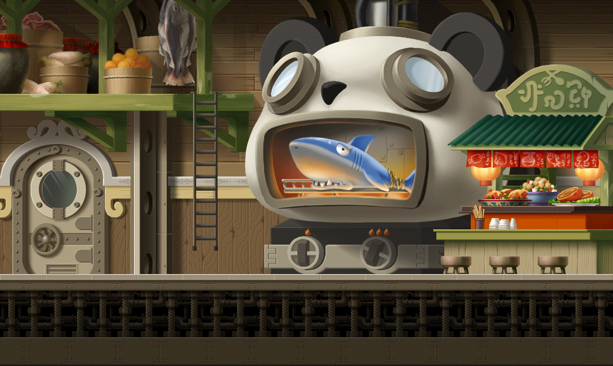
鯨魚號餐廳 -
21湯寶寶的特餐①EXP 50,000
第一次準備特餐材料。
藍菇菇傘 x25
藍菇菇 肥肥頭 x10
肥肥湯寶寶鯨魚號餐廳完成後需等待 1 天，才可接取湯寶寶的特餐②。
-
22湯寶寶的特餐②EXP 50,000
文本寫「繼昨天之後」，第二次準備同樣材料。
藍菇菇傘 x25
藍菇菇 肥肥頭 x10
肥肥湯寶寶鯨魚號餐廳完成後需等待 1 天，才可接取湯寶寶的特餐③。
-
23湯寶寶的特餐③EXP 50,000
第三次準備同樣材料。
藍菇菇傘 x25
藍菇菇 肥肥頭 x10
肥肥湯寶寶鯨魚號餐廳完成後需等待 1 天，才可接取湯寶寶的特餐④。
-
24湯寶寶的特餐④EXP 50,000
第四次準備同樣材料，完成後湯寶寶會告知卡伊琳正在找你。
藍菇菇傘 x25
藍菇菇 肥肥頭 x10
肥肥湯寶寶鯨魚號餐廳 卡伊琳鯨魚號航海室完成後需等待 1 天，才可接續「融合完成的消息」。
-
25融合完成的消息
卡伊琳通知戒指融合完成後，回到魔法森林找漢斯。
卡伊琳鯨魚號航海室 漢斯魔法森林圖書館 -
26破損的圖書館
回到魔法森林後，研究室已破損，戒指和材料消失，只留下灰燼蹤跡。
 灰燼
灰燼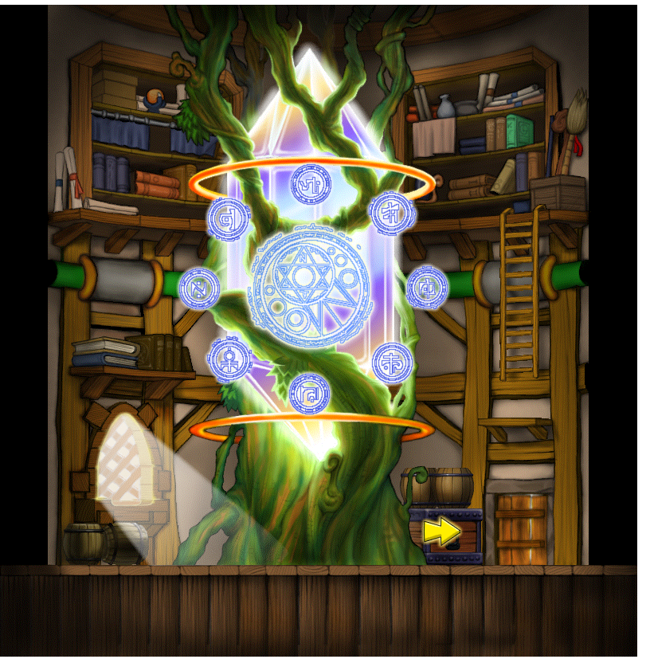
破損的圖書館蹤跡破損的圖書館從魔法森林出發
魔法森林：進入破損的圖書館→破損的圖書館：灰燼從魔法森林出發
魔法森林：進入破損的圖書館→破損的圖書館：蹤跡 -
27隱藏研究室
循著灰燼前往隱藏研究室，遇見愛得溫。
灰燼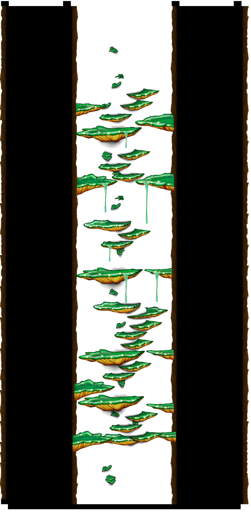
北部森林訓練場Ⅴ愛得溫隱藏研究室從魔法森林出發
魔法森林：往魔法森林北郊→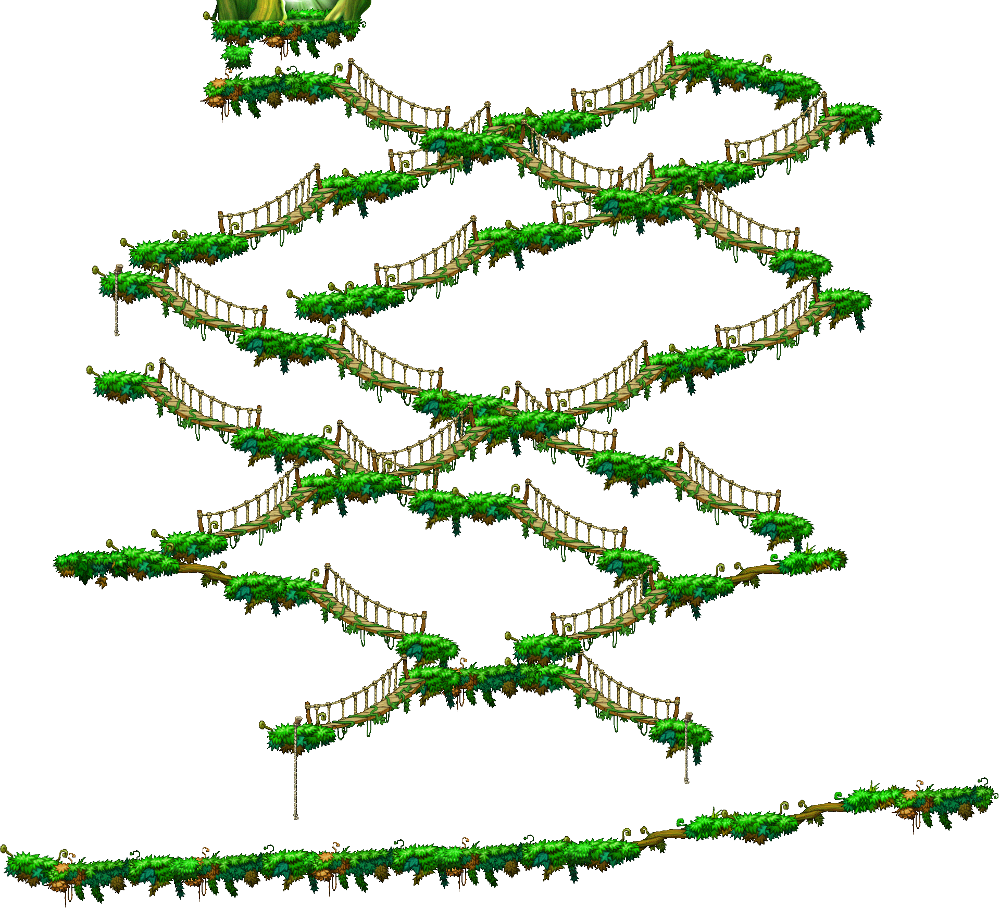
魔法森林北郊：往大木林Ⅰ→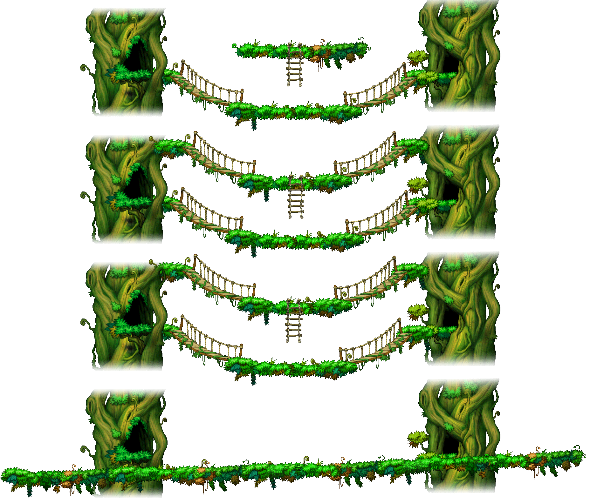
大木林Ⅰ：往魔法森林北部→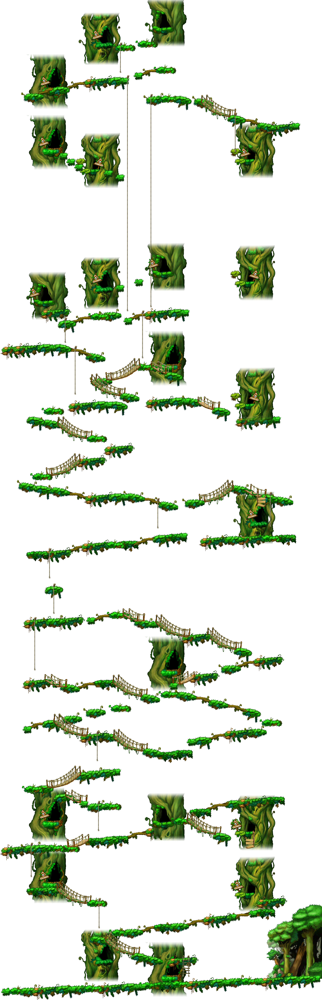
魔法森林北部：進入北部森林訓練場Ⅴ→北部森林訓練場Ⅴ：灰燼→北部森林訓練場Ⅴ：進入隱藏研究室→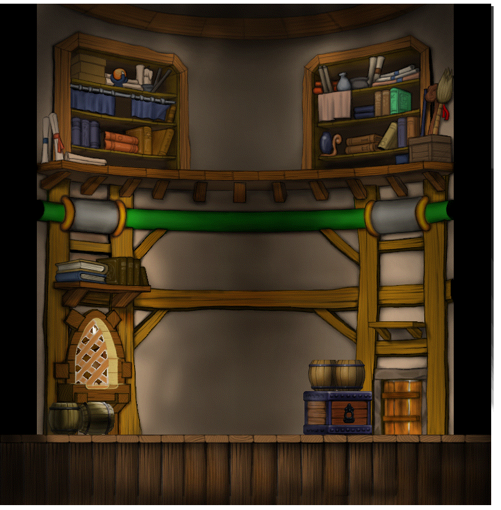
隱藏研究室：愛得溫 -
28被污染的東西們
擊敗愛得溫派出的污染怪物。
愛得溫隱藏研究室受污染的猴子 x2 受污染的天使猴 x2 受污染的風獨眼獸 x2 -
29師父與徒弟
看完漢斯與愛得溫的結尾後，回到魔法圖書館找漢斯。
漢斯魔法森林圖書館 愛得溫隱藏研究室 -
30選擇冒險家的戒指EXP 100,000
最後三選一取得冒險家的戒指。
冒險家的戒指-生命 需求 Lv.30 HP +500 冒險家的戒指-靈魂 需求 Lv.30 MP +500 冒險家的戒指-調和 需求 Lv.30 HP +250MP +250
總材料清單
任務道具
綠水靈的生命氣息 x30
綠水靈黑肥肥的生命氣息 x30
黑肥肥刺菇菇的生命氣息 x30
刺菇菇 永不折斷的執念 x50
黑斧木妖 卡蜜拉遺失的藥 x1
藍菇菇 鱷魚的牙齒 x100
鱷魚 永不熄滅的生命意志 x1
殭屍菇菇
綠水靈
黑肥肥的生命氣息 x30黑肥肥
刺菇菇的生命氣息 x30刺菇菇 永不折斷的執念 x50
黑斧木妖 卡蜜拉遺失的藥 x1
藍菇菇 鱷魚的牙齒 x100
鱷魚 永不熄滅的生命意志 x1
殭屍菇菇
一般道具
樹枝 x50
木妖、樹妖王 葉子 x50
黑木妖、樹妖王 木柴 x50
斧木妖、黑斧木妖、樹妖王 菇菇寶貝傘 x50
菇菇寶貝 綠水靈珠 x10
綠水靈 風獨眼獸之尾巴 x50
風獨眼獸 藍菇菇傘 x100
藍菇菇 肥肥頭 x40
肥肥
木妖、樹妖王 葉子 x50
黑木妖、樹妖王 木柴 x50
斧木妖、黑斧木妖、樹妖王 菇菇寶貝傘 x50
菇菇寶貝 綠水靈珠 x10
綠水靈 風獨眼獸之尾巴 x50
風獨眼獸 藍菇菇傘 x100
藍菇菇 肥肥頭 x40
肥肥
NPC 對話腳本
56 個任務 / 293 段依任務 ID 收錄本地任務資料中的完整 NPC 對話。每個任務預設折疊，展開後可查看接取、完成與未完成條件的對話分支。
69039師父的擔憂(劍士)6 段
接取：對話
0_0眼神大不相同了！這才像個劍士的臉。
但可別誤會。從現在起你將面對的，與目前為止截然不同。光靠蠻力硬衝，只會就此結束。
但可別誤會。從現在起你將面對的，與目前為止截然不同。光靠蠻力硬衝，只會就此結束。
接取：對話
0_1我在這裡培育了無數劍士，其中不乏令人驚嘆的強大之輩。即便如此...他們之中仍有幾人再也沒能回來。
強大與活下去，是兩回事。在學會這一點之前，不能稱之為真正的劍士。
強大與活下去，是兩回事。在學會這一點之前，不能稱之為真正的劍士。
接取：對話
0_2...聽說魔法森林的漢斯最近正在進行那方面的研究。就是研究讓冒險家們能夠平安歸來的方法。魔法師們做的事我不太清楚，但若是那位的話，應該值得信賴。去幫幫他吧，那也將成為修煉的一部分。
接取：確認
0_yes_0活著回來，我會在這裡等你。
接取：取消
0_no_0難道劍士也會膽怯嗎？
未完成：需要找 NPC
1_stop_npc_0冒險家的裝備測試
69040師父的擔憂(魔法師)5 段
接取：對話
0_0恭喜你。沒想到你能走到這裡...不，其實我早就知道了。從第一次見到你時，眼神就不一樣...
但從現在起才是真正的開始。你迄今為止走過的路...與今後將要面對的相比，不過是散步而已...。
但從現在起才是真正的開始。你迄今為止走過的路...與今後將要面對的相比，不過是散步而已...。
接取：對話
0_1我在這個位置待了很長的歲月，無數孩子們踏出了這扇門。然而再次歸來的孩子們...並不多...。
接取：對話
0_2再也無法只是袖手旁觀，於是開始了研究。不是增強力量，而是關於如何存活下去的研究...
如果你不介意的話，能幫我一個忙嗎？
如果你不介意的話，能幫我一個忙嗎？
接取：確認
0_yes_0有時間的話再來聊吧，準備好了就來找我說話....
接取：取消
0_no_0這樣啊，我並不打算強留你。
若改變心意，隨時都可以來，我一直都在這裡....
若改變心意，隨時都可以來，我一直都在這裡....
69041師父的擔憂 (弓箭手)6 段
接取：對話
0_0到目前為止你做得非常好，
但現在才是開始。今後你將面對的一切，將會比到目前為止危險得無可比擬。
但現在才是開始。今後你將面對的一切，將會比到目前為止危險得無可比擬。
接取：對話
0_1我培養了無數徒弟，他們都帶著興奮與好奇心，笑著說會平安歸來後離去。
...但此後再也沒能見到的人...也有很多。
...但此後再也沒能見到的人...也有很多。
接取：對話
0_2...聽說魔法森林的漢斯大人最近正埋首於一項研究，為了讓更多冒險家能夠安全地冒險，並且能夠平安歸來的方法。
他和我的心意是相同的，或許他會需要幫助。若你能前去，必定是莫大的助力。
他和我的心意是相同的，或許他會需要幫助。若你能前去，必定是莫大的助力。
接取：確認
0_yes_0請多保重，還有，一定要再見。
接取：取消
0_no_0啊，現在不方便嗎？沒關係，
你也有自己的事情要做，看來是我過於擔心了。
你也有自己的事情要做，看來是我過於擔心了。
未完成：需要找 NPC
1_stop_npc_0漢斯大人在魔法森林。
69042師父的擔憂(盜賊)6 段
接取：對話
0_0呵呵...變成像模像樣的盜賊了呢。說實話，比第一次見到你時強多了。
不過話說回來，從現在開始才是真正的考驗。到目前為止對付的那些，當作是暖身運動就好。
不過話說回來，從現在開始才是真正的考驗。到目前為止對付的那些，當作是暖身運動就好。
接取：對話
0_1你知道在這行撐得久的是什麼樣的人嗎？不是強或快的人，而是無論如何都活下來的人，知道了嗎？
接取：對話
0_2說到這個，你知道魔法森林大魔法師漢斯吧？那人在做一項奇怪的研究，據說是延長冒險家壽命的方法。
既然是那人在做的事，應該不是白費工夫。去拜訪一下吧，幫忙的同時也能學到不少東西。
既然是那人在做的事，應該不是白費工夫。去拜訪一下吧，幫忙的同時也能學到不少東西。
接取：確認
0_yes_0決定的好，活著回來再見吧。
接取：取消
0_no_0怎麼了，有什麼要緊事嗎？
算了，我也沒打算強迫你，有意願的話再來吧。
算了，我也沒打算強迫你，有意願的話再來吧。
未完成：需要找 NPC
1_stop_npc_0去魔法森林看看吧。
69043師父的擔憂(海盜)6 段
接取：對話
0_0喲，還不錯嘛。和第一次來的時候眼神完全不同了。
不過別高興得太早，從現在起你將面對的世界，和到目前為止完全是不同次元。越過幾個海浪就以為自己是航海師，那可不行。
不過別高興得太早，從現在起你將面對的世界，和到目前為止完全是不同次元。越過幾個海浪就以為自己是航海師，那可不行。
接取：對話
0_1在船上待久了，有一件事自然會明白。小浪過後，必有大浪來臨，無一例外。
所以大海風平浪靜時，不是放鬆的時候，而是要趁那時檢查船帆、做好準備。浪頭就在眼前才想著去綁繩子的人，已經算是掉進水裡了。
所以大海風平浪靜時，不是放鬆的時候，而是要趁那時檢查船帆、做好準備。浪頭就在眼前才想著去綁繩子的人，已經算是掉進水裡了。
接取：對話
0_2正好，魔法森林有位叫漢斯的人，聽說他最近在研究冒險家的生命力之類的事。你去幫他一下，對你肯定也有幫助。
接取：確認
0_yes_0很好，還愣著幹嘛？那就去吧。
道別說那麼長幹嘛，後會有期。
道別說那麼長幹嘛，後會有期。
接取：取消
0_no_0什麼，你已經有別的地方要去了？
算了，別忘了我說的話，趁有時間早點做好準備。
算了，別忘了我說的話，趁有時間早點做好準備。
未完成：需要找 NPC
1_stop_npc_0漢斯在魔法森林。
69045師父的後悔8 段
接取：對話
0_0我也不確定和你說這些是否正確...只是我認為這是遲早要說的話....
接取：對話
0_1我在這個位置待了很久....在這段時間裡，無數孩子們走出了這扇門。他們都和你一樣，眼中閃著對冒險的期待與渴望。
...其中許多孩子們，我再也無緣相見...
那些孩子們中，甚至有人動用了強行燃燒魔力來延續生命的術法。當然，那也未能阻止悲劇的發生，反而只帶來了更糟糕的結果....
...其中許多孩子們，我再也無緣相見...
那些孩子們中，甚至有人動用了強行燃燒魔力來延續生命的術法。當然，那也未能阻止悲劇的發生，反而只帶來了更糟糕的結果....
接取：對話
0_2.... 我袖手旁觀了太久。傳授智慧與力量固然重要，但作為師傅，最應該先做的事，是讓你們能平安歸來。這個道理我醒悟得太晚了...
所以近來開始了研究。
所以近來開始了研究。
接取：對話
0_3...若是有一種方法，能在不冒危險的情況下增加生命力，你會怎麼做？聽起來也許異想天開...但線索已經找到了。
你能幫助我嗎？
你能幫助我嗎？
接取：確認
0_yes_0謝謝，我就知道你會這樣做的。
話說多了....先去喘口氣吧，接下來會很忙的....
話說多了....先去喘口氣吧，接下來會很忙的....
接取：取消
0_no_0是嗎。看來老頭子的嘮叨說得太長了。
沒關係，也不是什麼急事。若是改變心意，隨時都可以來。
沒關係，也不是什麼急事。若是改變心意，隨時都可以來。
進行/完成：對話
1_0喘口氣了嗎...？
那麼...現在，正式來談談吧...
那麼...現在，正式來談談吧...
進行/完成：對話
1_1關於我在研究什麼...以及我想拜託你什麼...
69046尋找古老的智慧7 段
接取：對話
0_0我在這項研究上花費了很長時間。起初不斷重複將魔力刻入身體、強行灌入、引導填滿... 結果全都失敗了。
後來才明白，從一開始試圖強行創造生命就是錯的...生命並非創造出來的，而是將已有的生命分享共用...
後來才明白，從一開始試圖強行創造生命就是錯的...生命並非創造出來的，而是將已有的生命分享共用...
接取：對話
0_1我從妖精們的歷史中找到了線索。他們從很久以前就向自然借用生命並償還後帶著充沛的生命力生活著...然而，現在那種方法已被遺忘了。對他們來說早已如呼吸般自然，所以才被遺忘了...
接取：對話
0_2聽說森林某處有一座妖精們曾使用的老舊圖書館。雖然現在因無人問津而被遺忘，但那裡應該還留有記錄...
能否請你去找一找。
能否請你去找一找。
接取：確認
0_yes_0謝謝。位置我也不清楚...問問妖精們應該就能知道了。
妖精們可能會有所警戒，但只要說是我派你去的，他們應該會告訴你...
妖精們可能會有所警戒，但只要說是我派你去的，他們應該會告訴你...
接取：取消
0_no_0看來是個太過勉強的請求了....
進行/完成：對話
1_0圖書館...？人類為何要尋找妖精們的圖書館呢？
未完成：需要找 NPC
1_stop_npc_0確切的位置我也不知道...
問問妖精們應該就能知道了...
問問妖精們應該就能知道了...
69047心存警戒的妖精6 段
接取：對話
0_0漢斯派你來的？...看來應該和最近他向我們詢問的事情有關。
既然是漢斯的朋友，那就值得信賴。因為他是個親切的人。
既然是漢斯的朋友，那就值得信賴。因為他是個親切的人。
接取：對話
0_1若是要找被遺忘的圖書館，我也不知道確切的位置。
時間已經過了很久，說不定早已被樹木覆蓋了。
去問問羅雯吧，她喜歡書，或許會知道。
時間已經過了很久，說不定早已被樹木覆蓋了。
去問問羅雯吧，她喜歡書，或許會知道。
接取：確認
0_yes_0去找羅雯看看吧。
接取：取消
0_no_0你不是在找圖書館嗎？
進行/完成：對話
1_0漢斯派你來的？
需要幫助嗎？
需要幫助嗎？
未完成：需要找 NPC
1_stop_npc_0羅雯在魔法森林村莊。
69048羅雯的記憶6 段
接取：對話
0_0廢棄的圖書館啊...
圖書館的話，有小時候去玩過幾次的記憶。不過裡面只有關於自然和歷史的書，很快就失去興趣了。
圖書館的話，有小時候去玩過幾次的記憶。不過裡面只有關於自然和歷史的書，很快就失去興趣了。
接取：對話
0_1必須深入森林才行，直接去的話會找不到的，
因為道路已被樹木覆蓋了。
去找瑪麗吧，她經常為了照顧寵物而深入森林，應該比我更清楚。
因為道路已被樹木覆蓋了。
去找瑪麗吧，她經常為了照顧寵物而深入森林，應該比我更清楚。
接取：確認
0_yes_0最近森林氣息有些異常，請小心。
接取：取消
0_no_0瑪麗會親切地告訴你的，不用擔心，去找她看看吧。
進行/完成：對話
1_0被遺忘的圖書館？以前經常去呢。
未完成：需要找 NPC
1_stop_npc_0妖精瑪麗在魔法森林村莊。
69049廢棄的妖精的圖書館6 段
接取：對話
0_0為什麼要找圖書館？
大魔法師漢斯拜託的？看來漢斯又在研究什麼了。
大魔法師漢斯拜託的？看來漢斯又在研究什麼了。
接取：對話
0_1好，我告訴你。
在蘊含精靈智慧的森林下方，有一座入口隱藏在大樹後方，要仔細找才能看到。
在蘊含精靈智慧的森林下方，有一座入口隱藏在大樹後方，要仔細找才能看到。
接取：確認
0_yes_0小心，那裡年代久遠，地板不太穩固。
接取：取消
0_no_0不是說是漢斯拜託的嗎？
進行/完成：對話
1_0在雜亂生長的植物之間發現了一本老舊書本。
未完成：需要找 NPC
1_stop_npc_0就在森林深處，大樹木的後方。
在森林裡小心別迷路了。
在森林裡小心別迷路了。
69050妖精們的古書7 段
接取：對話
0_0封面已經腐朽，文字無法辨識。但內頁仍清晰地留有妖精的文字。
看來是漢斯在找的書，帶去給他吧。
看來是漢斯在找的書，帶去給他吧。
接取：確認
0_yes_0(回到魔法森林吧。)
接取：取消
0_no_0(再多看看之後再走。)
進行/完成：對話
1_0哦，這是...真的找來了...
進行/完成：確認
1_yes_0書雖然損毀不少，但還讀得下去。這是比我想像中更古老的記錄啊...
謝謝，若不是你，這本書恐怕就這樣埋沒在森林裡了。
謝謝，若不是你，這本書恐怕就這樣埋沒在森林裡了。
進行/完成：確認
1_yes_1給我一點點...時間...
未完成：需要找 NPC
1_stop_npc_0…
69051生命能量 ①6 段
接取：對話
0_0妖精們並非創造了生命，只是將已散落在自然中的事物編織合而為一罷了...就像將線搓成繩子一樣。
真令人驚嘆！我耗費數十年試圖創造原本不存在的東西，而答案從一開始就遍布四周。
真令人驚嘆！我耗費數十年試圖創造原本不存在的東西，而答案從一開始就遍布四周。
接取：對話
0_1還沒有完全掌握，必須找出能讓人類編織使用的方法才行。
接取：對話
0_2在我研究製作配方的期間，請你幫忙收集一些材料。生命氣息...感覺會需要非常多...
接取：確認
0_yes_0謝謝...生命氣息應該不難從生活在森林中的生物身上取得。
接取：取消
0_no_0原來如此，不必著急，我也還沒完成配方。
未完成：道具不足
1_stop_item_0生命氣息應該不難從生活在森林中的生物身上取得...
69052生命能量 ②1 段
未完成：道具不足
1_stop_item_0生命氣息在森林中生活的生物身上應該不難取得...
69057生命能量 ③1 段
未完成：道具不足
1_stop_item_0生命氣息在森林中生活的生物身上應該不難取得...
69058不屈的執念3 段
進行/完成：對話
1_0那邊的你，看起來不像是來搭船的，有什麼事情？
進行/完成：對話
1_1你說來找什麼的？
未完成：需要找 NPC
1_stop_npc_0去海邊看看吧。那裡的人們...應該知道些什麼...
69059漠然的船員7 段
接取：對話
0_0不屈於任何試煉、永不折斷的執念...這個嘛，說起來倒是頭頭是道，不過...
接取：對話
0_1老實說吧，我從來沒有像那位魔法師所說的，懷抱著什麼崇高的心情出海。
早上睜眼就出門，傍晚回來就睡覺，僅此而已。
早上睜眼就出門，傍晚回來就睡覺，僅此而已。
接取：對話
0_2不過，那是我的故事，其他人也許想法又不一樣。你去到處問問看吧，港口裡總是有很多人的。
接取：確認
0_yes_0去找百京和特奧吧，他們兩個都是在大海上待了很久的人。
接取：取消
0_no_0你不是說來尋找執念的嗎？就這點執念，什麼都找不到吧。
進行/完成：對話
1_0快來！大海隨時都在等待著冒險家。
未完成：需要找 NPC
1_stop_npc_0去找百京和特奧吧。沒找到嗎？他們應該在港口某處。
69060大海的冒險家6 段
接取：對話
0_0不向洶湧大海屈服的執念！哈哈哈哈！找得好，身為維京後裔的我，可說是執念的結晶！
接取：對話
0_1你也想擁有那樣的執念？好，那麼跟我一起出海吧！被海浪捲個十年左右，應該就能得到了！
接取：確認
0_yes_0什麼，那是什麼表情？我可不是在開玩笑。連這點覺悟都沒有，就想擁有執念嗎？
看來不是當船員的料，去問別人吧。
看來不是當船員的料，去問別人吧。
接取：取消
0_no_0如果想乘船遨遊大海，到時候再來找我！
進行/完成：對話
1_0沒見過的臉啊！找我有什麼事？
未完成：需要找 NPC
1_stop_npc_0我不清楚，去問別人吧。
69061特奧的忠告7 段
接取：對話
0_0執念？你問能不能找到在洶湧大海中屹立不折的執念？哼...確實，生活在大海中的傢伙們，可以說都擁有對生命的執念。
接取：對話
0_1不過...你打算怎麼取得？你有好好坐過船嗎？說不定得在海上漂好幾天...不，好幾個月也說不定。若不是海上之人，這並不容易。要不要試著找找其他方法？
接取：確認
0_yes_0好，這樣想是對的，大海可不是好惹的地方。
接取：取消
0_no_0還真是個挺固執的傢伙嘛？
進行/完成：對話
1_0和他們談過之後感覺怎麼樣，有找到答案嗎？
進行/完成：對話
1_1果然大家說的都差不多。
生活在大海中的生物或許擁有那種執念，但若非海上之人，要得到恐怕很難。
光是坐幾天船，你也不可能生出那種心境的。
生活在大海中的生物或許擁有那種執念，但若非海上之人，要得到恐怕很難。
光是坐幾天船，你也不可能生出那種心境的。
未完成：需要找 NPC
1_stop_npc_0去和坤談談吧，說不定能想出什麼好辦法呢？
69062貧瘠之地的事物8 段
接取：對話
0_0我想了一下...你來海邊，不就是因為覺得能從每天拼命求生的海洋生物身上，獲得不屈的執念嗎？
接取：對話
0_1那麼未必非得是大海不可吧？只要是難以生存的地方，哪裡不都一樣嗎？
接取：對話
0_2去勇士之村看看怎麼樣？那裡是一片只有石頭的土地，比大海更難以生存的地方。
接取：確認
0_yes_0想得好。
啊，對了，去勇士之村的話，可以去找武術教練。他是以真正的劍士身份名聲遠播的人，說不定能讓你得到你所尋找的東西。
啊，對了，去勇士之村的話，可以去找武術教練。他是以真正的劍士身份名聲遠播的人，說不定能讓你得到你所尋找的東西。
接取：取消
0_no_0去勇士之村可不容易，但如果你在尋找執念，就不要輕易放棄。
進行/完成：對話
1_0有什麼事呢? 是漢斯的跑腿？
...原來如此，是因為那項研究啊。好，你說在找什麼？
...原來如此，是因為那項研究啊。好，你說在找什麼？
進行/完成：對話
1_1面對任何試煉都不屈服...不折斷的執念啊。沒錯，那確實存在於這片土地上。
因為在這裡存活下來的，沒有一個是沒有求生執念的。
因為在這裡存活下來的，沒有一個是沒有求生執念的。
未完成：需要找 NPC
1_stop_npc_0去勇士之村可不容易，但如果你在尋找執念，就不要輕易放棄。
69063不屈的人7 段
接取：對話
0_0嗯...好，那樣比較好。
這個村莊裡有個在這片土地上比我撐更久的人，就是酋長。
這個村莊裡有個在這片土地上比我撐更久的人，就是酋長。
接取：對話
0_1那個人在這片石地上為人們蓋房子、養活家人。就算炙熱的熱氣讓大地燃燒，就算狂烈的暴風席捲而來，他也從未停歇。
接取：對話
0_2去找他問問看吧。
接取：確認
0_yes_0對了，就算他叫你做粗活，也別抱怨，照做就是。在那過程中，你一定能學到些什麼。
接取：取消
0_no_0看來並不著急呢。
進行/完成：對話
1_0沒見過的臉啊。
來得正好！幫我一個忙吧。
來得正好！幫我一個忙吧。
未完成：需要找 NPC
1_stop_npc_0是酋長。他在村莊裡，好好找找看吧。
69064堅不可摧的家6 段
接取：對話
0_0你看到那邊那棟房子了嗎？上次的旋風把牆面都吹飛了。
這一帶本來就是這樣，風一旦大起來，屋頂就會被吹走，有時還會飄來火種，把房子燒掉。
這一帶本來就是這樣，風一旦大起來，屋頂就會被吹走，有時還會飄來火種，把房子燒掉。
接取：對話
0_1那麼又能怎樣呢。為了在這座岩石山上生存下去，只能修了再蓋。
接取：對話
0_2所以請你幫個忙。
請幫我找些木柴和樹枝，好補上被風吹走的牆壁。
請幫我找些木柴和樹枝，好補上被風吹走的牆壁。
接取：確認
0_yes_0謝謝。啊，不必特意挑好的，反正下次風一來又會吹走了。
接取：取消
0_no_0呵呵，看來是耽誤了你的時間。
不過你來找我，不是有事嗎？
不過你來找我，不是有事嗎？
未完成：道具不足
1_stop_item_0還沒完成嗎？慢慢來。
是木柴、樹枝和樹葉。
是木柴、樹枝和樹葉。
69065不屈的執念4 段
進行/完成：對話
1_0看你的表情，應該是找到了，恭喜你。
進行/完成：對話
1_1不過話說回來，你離開之後我仔細想了想，覺得也許你的內心深處，也已經擁有那種不向任何試煉屈服的執念。
進行/完成：對話
1_2你不正是楓之谷世界的冒險家嗎？甚至為了尋找執念那模糊的材料，特地來到這險峻岩山...若連你都沒有執念，還有誰會有呢？
未完成：道具不足
1_stop_item_0還沒找到嗎？應該可以從在這片貧瘠土地上頑強生存的生物身上取得。
69066第一個材料7 段
接取：對話
0_0不管怎樣，既然取得了想要的東西，現在該回去了。
保重，之後若再路過的話記得來坐坐。
保重，之後若再路過的話記得來坐坐。
接取：對話
0_1那時候如果屋頂還是飛走的話，幫個忙吧，哈哈。
接取：確認
0_yes_0路上小心。
接取：取消
0_no_0開個玩笑，我怎麼好意思再次麻煩你呢？哈哈...不過也說不定。
進行/完成：對話
1_0哦，你...終於回來了。光看你的臉就知道了，這趟旅途相當艱辛吧。
進行/完成：對話
1_1讓我看看...嗯...熱烈而...堅硬的氣息。既不燃燒也不搖動，卻深沉而厚重...感受到一種寂靜的壓迫感...
取得很好，辛苦了。
取得很好，辛苦了。
未完成：需要找 NPC
1_stop_npc_0現在該回到那位等著你的魔法師的所在之處了。是魔法森林，對吧？
69067等待者的祈禱6 段
接取：對話
0_0現在該去取得第二樣材料了... 嗯... 這次也不容易啊...
接取：對話
0_1如果說第一樣是不屈的心，那第二樣就是等待者的祈禱...盼望離去之人能平安歸來的... 那份迫切心情...
接取：對話
0_2但這究竟要去哪裡取得... 完全沒有頭緒。這種時候，尋求比我更了解的人的幫助會更快。
弓箭手村的赫麗娜或許知道答案。多年來培育了無數徒弟...又一一送別了他們...
弓箭手村的赫麗娜或許知道答案。多年來培育了無數徒弟...又一一送別了他們...
接取：確認
0_yes_0謝謝，請把我的話轉告赫麗娜，她一定會幫忙的。
接取：取消
0_no_0看來是有急事了...
未完成：需要找 NPC
1_stop_npc_0赫麗娜在弓箭手村。
69068需要幫助的人們①6 段
接取：對話
0_0要整理好思緒，恐怕還需要一些時間呢。
接取：對話
0_1在那之前...可以去拜訪一下長老斯坦大人嗎？他最近看起來特別忙碌。照看路過弓箭手村的年輕冒險家們的事情似乎越來越多了。雖然嘴上說著那些冒險家在村子裡惹麻煩讓他頭痛，但他始終都很掛心。
如果我們能幫上什麼忙就好了。
如果我們能幫上什麼忙就好了。
接取：確認
0_yes_0謝謝，斯坦大人應該在村莊裡。
接取：取消
0_no_0嗯...在忙嗎？
進行/完成：對話
1_0哎，又是冒險家啊。
嗯？是赫麗娜讓你來的？那就太好了！
嗯？是赫麗娜讓你來的？那就太好了！
未完成：需要找 NPC
1_stop_npc_0還沒找到斯坦大人嗎？
69069需要幫助的人們②7 段
接取：對話
0_0最近路過這個村莊的年輕冒險家越來越多了。
不知道從哪裡走來的，個個狼狽不堪，腳上全是水泡，餓得連村莊的雜草都要拔來吃的架勢。
看著他們的背影...唉...好像在看離家的兒子一樣...心裡不是滋味。
不知道從哪裡走來的，個個狼狽不堪，腳上全是水泡，餓得連村莊的雜草都要拔來吃的架勢。
看著他們的背影...唉...好像在看離家的兒子一樣...心裡不是滋味。
接取：對話
0_1...想讓他們吃點東西，也想幫他們治療傷口，可這把老骨頭連材料都不好弄啊。
接取：對話
0_2你能幫我取一些菇菇寶貝傘嗎？熬粥給他們吃應該很管用。綠水靈珠也需要一些，那黏糊糊的東西對水泡特別有效。
接取：確認
0_yes_0謝謝，還好偶爾有像你這樣的冒險家在。
接取：取消
0_no_0呃咳，現在的年輕人啊...請別惹麻煩，安靜地待著再走吧。
進行/完成：對話
1_0嘿，回來得挺快嘛。
這樣應該夠了。辛苦了。
這樣應該夠了。辛苦了。
未完成：道具不足
1_stop_item_0菇菇寶貝傘可以從菇菇寶貝身上取得，綠水靈珠可以從綠水靈身上取得。在村莊附近應該不難找到。
69070需要幫助的人們③7 段
接取：對話
0_0呃咳...不過我完全不擅長烹飪，得去請麗娜幫忙才行。麗娜是弓箭手村裡廚藝最好的人。啊，請小心別讓這件事傳到明明夫人耳裡...
接取：對話
0_1告訴麗娜是我派你去的，她會幫忙的。
接取：確認
0_yes_0那麼就拜託你了。
接取：取消
0_no_0現在的年輕人果然....
進行/完成：對話
1_0嗯？是斯坦爺爺派你來的嗎？
進行/完成：對話
1_1要煮粥給冒險家們吃嗎？那找對人了！說到菇菇粥，那可是我的拿手菜！
未完成：需要找 NPC
1_stop_npc_0沒找到麗娜嗎？
69071需要幫助的人們④6 段
接取：對話
0_0哎呀，已經連材料都取得了嗎？
讓我看看...菇菇傘蓋這樣就夠了...
讓我看看...菇菇傘蓋這樣就夠了...
接取：對話
0_1要讓粥有濃郁的風味，需要好的湯底。用風獨眼獸的尾巴長時間熬煮，就能熬出濃郁紮實的湯底。
請問你能幫我取得一些嗎？
請問你能幫我取得一些嗎？
接取：確認
0_yes_0謝謝！那麼我來準備煮粥吧。
接取：取消
0_no_0是有什麼急事嗎？
進行/完成：對話
1_0哇，這麼快就取得了！謝謝。
未完成：道具不足
1_stop_item_0還需要更多風獨眼獸的尾巴，
應該可以從附近的風獨眼獸身上取得。
應該可以從附近的風獨眼獸身上取得。
69072需要幫助的人們⑤7 段
接取：對話
0_0材料放得很多，所以煮得比平時更美味！份量也很充裕，分給大家也都還有剩呢？
接取：對話
0_1如果不忙的話，能幫我把這碗粥送給赫麗娜大人嗎？她很喜歡我煮的菇菇粥！
村子的人們對赫麗娜大人一直都懷有感謝之情，想這樣一點一滴地回報她。
啊啊，請不要擔心！冒險家們那份我會好好分配的。
村子的人們對赫麗娜大人一直都懷有感謝之情，想這樣一點一滴地回報她。
啊啊，請不要擔心！冒險家們那份我會好好分配的。
接取：確認
0_yes_0謝謝，路上小心！
接取：取消
0_no_0是有什麼急事嗎？
進行/完成：對話
1_0這是什麼？麗娜煮的菇菇粥？
進行/完成：對話
1_1幫助了斯坦跟麗娜...原來如此。託你的福，路過村莊的年輕冒險家們也能用溫暖的粥填飽肚子了。
未完成：需要找 NPC
1_stop_npc_0粥要涼了！快去赫麗娜大人那裡吧。
69073看起來很著急的卡蜜拉7 段
接取：對話
0_0看著你幫助那兩個人的樣子，我感覺自己正在一點一點地接近答案。
接取：對話
0_1再給我一點時間。在這段時間裡，你也可以在村莊裡多逛逛。弓箭手村......是個有很多需要幫助的人的地方。
接取：確認
0_yes_0謝謝，有答案的話我會馬上叫你的。
接取：取消
0_no_0是有什麼急事嗎？
進行/完成：對話
1_0啊，不行...怎麼會...
進行/完成：對話
1_1怎、怎麼辦才好？請幫幫我！
未完成：需要找 NPC
1_stop_npc_0在村莊裡多逛逛怎麼樣？
69074遺失的藥7 段
接取：對話
0_0抱歉！我現在有點慌亂...其實是好不容易找到的藥被怪物搶走了。那是要拿去給生病的好友的...
接取：對話
0_1藍菇菇！被藍菇菇搶走了！是經常出現在村莊附近的怪物。
拜託你了，沒有那個藥的話...好友的狀態會越來越差的...
拜託你了，沒有那個藥的話...好友的狀態會越來越差的...
接取：確認
0_yes_0謝謝，真的謝謝！
路上小心。
路上小心。
接取：取消
0_no_0那...是呢，抱歉！
是個為難你的請求呢。
是個為難你的請求呢。
進行/完成：對話
1_0太好了！你平安回來了！
因為一直沒有你的消息，我很擔心是不是發生了什麼事，又或是我提出了過分的請求...
因為一直沒有你的消息，我很擔心是不是發生了什麼事，又或是我提出了過分的請求...
進行/完成：對話
1_1...哎呀，對！就是這個藥！謝謝你。
託你的福，終於可以把藥交給生病的好友了！
託你的福，終於可以把藥交給生病的好友了！
未完成：道具不足
1_stop_item_0藍菇菇！被村莊附近的藍菇菇搶走了。
69075空珠子7 段
接取：對話
0_0對了，赫麗娜大人找過冒險家你呢。
請去拜訪一下吧！
請去拜訪一下吧！
接取：確認
0_yes_0那麼我得趕緊去找好友了。
再見了，冒險家！
再見了，冒險家！
接取：取消
0_no_0好像是什麼重要的事...
進行/完成：對話
1_0哦，你來了啊，聽說你幫了卡蜜拉。
太好了，真的。
太好了，真的。
進行/完成：對話
1_1還有...找到答案了。看著你幫助斯坦大人、麗娜、卡蜜拉的樣子，我明白了。等待者們的祈禱，已經在你身旁了。
進行/完成：對話
1_2你已幫助了許多人。他們祈願你平安返回的心意，光是這樣就已足夠了。
進行/完成：對話
1_3請收下這顆珠子，雖然現在還是空的，但這是一顆可以承載珍貴心意的珠子。
69076承載心意的珠子5 段
接取：對話
0_0現在帶著這顆珠子，再去拜訪你曾幫助過的人們吧。也就是斯坦、麗娜，還有卡蜜拉，他們的心意將會填滿這顆珠子。
接取：確認
0_yes_0託你的福，我也領悟了許多，請小心回去。
接取：取消
0_no_0是有什麼急事嗎？
進行/完成：對話
1_0喲，是你啊！
還在弓箭手村呢。
還在弓箭手村呢。
未完成：需要找 NPC
1_stop_npc_0請去找你幫助過的斯坦、麗娜跟卡蜜拉，他們的心意將會填滿這顆珠子。
69077祈願平安返回的心意6 段
接取：對話
0_0那天以後，我一定會讓年輕的冒險家們喝上一碗溫暖的粥再出發。也許是因為吃飽了，在村莊裡惹麻煩的傢伙也少了，真是不知道有多慶幸。
接取：對話
0_1這都是托你的福。希望...你無論身在何處都能平安，別受傷。一路小心。
接取：確認
0_yes_0好，再見了。
接取：取消
0_no_0在弓箭手村還有未完成的事嗎？
進行/完成：對話
1_0哎！你又來了呢！
未完成：需要找 NPC
1_stop_npc_0也去跟麗娜打個招呼再離開吧，她一定會很高興的。
69078居民們的祈禱8 段
接取：對話
0_0那天煮的粥，冒險家們都非常喜歡呢。果然不管是冒險還是戰鬥，吃飽了才有力氣啊。
接取：對話
0_1肚子餓的話隨時來找我！我會一直等著與你再見的。請不要受傷，隨時注意安全！
那麼，路上小心！
那麼，路上小心！
接取：確認
0_yes_0再見，冒險家大人！
接取：取消
0_no_0在弓箭手村還有未完成的事嗎？
進行/完成：對話
1_0啊...幸好再次見到你！
多虧你，藥平安送到了，好友也好多了。能告訴你這個消息真的很開心。
多虧你，藥平安送到了，好友也好多了。能告訴你這個消息真的很開心。
進行/完成：對話
1_1現在要離開弓箭手村了嗎？
應該是要前往更廣闊的世界了吧？
應該是要前往更廣闊的世界了吧？
進行/完成：對話
1_2弓箭手村是個新手冒險家特別常經過的村莊。也因此...不好的消息也常常傳來。
嗯嗯...也就是說，我想說的是...冒險家大人請千萬不要受傷，無論去哪裡都要平安回來！一定要！
嗯嗯...也就是說，我想說的是...冒險家大人請千萬不要受傷，無論去哪裡都要平安回來！一定要！
未完成：需要找 NPC
1_stop_npc_0卡蜜拉也在等著冒險家大人呢！
出發前，去打個招呼吧。
出發前，去打個招呼吧。
69079第二個材料5 段
接取：對話
0_0嗯？我好像在冒險家的背包裡看到了閃亮的光！
是發生什麼好事了嗎？
是發生什麼好事了嗎？
接取：對話
0_1呵呵，太好了。那麼請小心慢走。
接取：確認
0_yes_0我們一定要再見面喔！
接取：取消
0_no_0在弓箭手村還有事情要辦嗎？
未完成：道具不足
1_stop_item_0材料還沒找到嗎...？
69080承載生命的容器2 段
進行/完成：對話
1_0說是來替漢斯跑腿？
唉呦，研究看來進展得相當不錯嘛，這是個好消息。
唉呦，研究看來進展得相當不錯嘛，這是個好消息。
未完成：需要找 NPC
1_stop_npc_0達克魯就在墮落城市。
69081達克魯的考試1 段
未完成：道具不足
1_stop_item_0去搜索沼澤地帶吧，找出證物本身就是考試的一部分。
69082純度極高的原石2 段
進行/完成：對話
1_0哦，你來了。
這塊原石...那位好友挑得真不錯，純度確實很高。
辛苦了。
這塊原石...那位好友挑得真不錯，純度確實很高。
辛苦了。
未完成：道具不足
1_stop_item_0請帶去給漢斯。
69083陽光照不到之處9 段
接取：對話
0_0進行得很順利...我嘗試將生命氣息注入你帶來的原石。稍有不慎，原石可能承受不住那股氣息而碎裂...是相當危險的嘗試...
接取：對話
0_1然而原石...竟撐住了。絲毫無損，反而將那股氣息蘊含其中，散發出淡淡的光芒。這說明方向並沒有錯。
接取：對話
0_2只是...那道光並未持續太久...蘊含的氣息隨著時間流逝，會逐漸消散。照這樣下去，即使戒指完成了...力量也會很快熄滅的。
接取：對話
0_3...所以最後需要的，是不滅的生命意志。
接取：對話
0_4在那片不見半縷陽光的地底深處，能夠堅持生存下去的生命...想必定然懷有那樣的意志。
這大概是最後一個請求了...請幫我尋得那不滅的生命意志。
這大概是最後一個請求了...請幫我尋得那不滅的生命意志。
接取：確認
0_yes_0務必小心。光明之下的世界，潛藏著與地面截然不同的威脅...
接取：取消
0_no_0原來如此，不要勉強自己，等想清楚了再來吧。
進行/完成：對話
1_0歡迎到來，年輕人，是什麼事讓你來到這危險之地？
奇幻村是個寂靜而又危險的地方，若不想被無盡的洞穴和幽暗的森林所吞噬，可得打起精神來......
奇幻村是個寂靜而又危險的地方，若不想被無盡的洞穴和幽暗的森林所吞噬，可得打起精神來......
未完成：需要找 NPC
1_stop_npc_0陽光照不到之處...地底之下...維多利亞島最深處，去那裡看看吧。
69084不滅的生命意志①7 段
接取：對話
0_0不滅的生命意志...我也窮盡一生追尋各種藥草與生命，卻從未聽說過那種東西。
不過...若是在找陽光照不到的地方，那你可算找對人了。
不過...若是在找陽光照不到的地方，那你可算找對人了。
接取：對話
0_1螞蟻洞。那是連一縷陽光都照不進去的地方。無論走到哪裡，最終都會被黑暗所吞噬...是個又深又幽遠的地方。
這座村莊裡有個叫克利斯拉瑪的人。論對螞蟻洞的了解，他遠比我更清楚。你去找他問問看吧。
這座村莊裡有個叫克利斯拉瑪的人。論對螞蟻洞的了解，他遠比我更清楚。你去找他問問看吧。
接取：確認
0_yes_0好，去吧。
接取：取消
0_no_0是嗎？不用著急，慢慢來吧。
進行/完成：對話
1_0哦，是客人啊。你說是薩比特拉瑪派你來的？
進行/完成：對話
1_1在尋找不滅的生命意志...
未完成：需要找 NPC
1_stop_npc_0克利斯拉瑪應該就在這座村莊的某處。
69085不滅的生命意志②8 段
接取：對話
0_0這螞蟻洞的最底層，什麼奇奇怪怪的東西都有。全都是在一絲陽光都沒有的地方，拼命撐著的傢伙。
接取：對話
0_1其中，極少數...有些特別頑強的傢伙。就是那些即使面對死亡，也想盡辦法撐下去生存的傢伙。據說那種傢伙的身體某處，藏有不滅的生命意志。
接取：對話
0_2我果然...想知道那究竟是什麼，才在這裡待了這麼多年。為何有些存在即使面對死亡也不肯放手，而有些卻如此輕易地消逝。
接取：對話
0_3哪個傢伙擁有那種東西，我也不清楚。若是找到了，也讓我看看。我想知道真正的生命意志究竟是何種形態。
接取：確認
0_yes_0謝謝，請多保重。
接取：取消
0_no_0是嗎？那，若有心情就再來吧。
進行/完成：對話
1_0這正是永不熄滅的生命意志...
宛如將熄的餘燼般微弱...但仍活著。
宛如將熄的餘燼般微弱...但仍活著。
未完成：道具不足
1_stop_item_0這並不容易。然而，在螞蟻洞的深處，必定能夠找到。
69086最後的材料7 段
接取：對話
0_0真正的生命意志究竟是什麼...我來此地尋找真理，卻仍不知曉答案。然而，光是追尋那個問題，也度過了不算虛度的日子。
有時遇見像你這樣的冒險家，也能意外地更接近答案。
有時遇見像你這樣的冒險家，也能意外地更接近答案。
接取：對話
0_1現在要回去了嗎？
接取：確認
0_yes_0請多保重。
接取：取消
0_no_0哎呀，還猶豫什麼，快去吧。
進行/完成：對話
1_0哦，你來了。
微弱卻不熄滅的火焰...溫熱卻不冷卻的溫度...這正是...不滅的生命意志啊。
微弱卻不熄滅的火焰...溫熱卻不冷卻的溫度...這正是...不滅的生命意志啊。
進行/完成：對話
1_1現在所需的材料已全部齊聚，剩下的只是將這些融合為一...不過似乎需要一些時間...
未完成：需要找 NPC
1_stop_npc_0現在請回到你原本所在的地方吧。
69087前往鯨魚號5 段
接取：對話
0_0生命氣息、讓那股氣息得以留存的不屈執念、等待者們的祈禱，還有永不熄滅的生命意志...所需材料已全數齊備。接下來只剩將這一切融合在一起了...
不過似乎需要花些時間...
不過似乎需要花些時間...
接取：對話
0_1這段時間...如果不忙的話，要不要去見見鯨魚號的卡伊琳？他對你非常好奇呢...
接取：確認
0_yes_0好，去吧...融合一結束就再叫你回來。
接取：取消
0_no_0這樣啊。反正也不急，慢慢去吧。
未完成：需要找 NPC
1_stop_npc_0卡伊琳在鯨魚號裡呢。
69088湯寶寶的特餐①5 段
接取：對話
0_0先去找湯寶寶吧。他是我們鯨魚號上手藝精湛的廚師，會幫你準備特餐的。
接取：對話
0_1啊，材料要自己帶去。我推薦的料理是豬頭香菇火鍋。只需要準備一些肥肥頭和藍菇菇傘就行了，一定要去吃看看。
接取：確認
0_yes_0好，想得不錯。去好好吃一頓再回來吧。
接取：取消
0_no_0融合結束前，你打算做什麼？
未完成：道具不足
1_stop_item_0我推薦的料理是豬頭香菇火鍋，帶來肥肥頭和藍菇菇傘的話就會幫你做。
69089湯寶寶的特餐 ②1 段
未完成：道具不足
1_stop_item_0肥肥頭和藍菇菇傘，今天也麻煩你了。
69090湯寶寶的特餐③1 段
未完成：道具不足
1_stop_item_0肥肥頭和藍菇菇傘，今天也麻煩你了。
69091湯寶寶的特餐④1 段
未完成：道具不足
1_stop_item_0肥肥頭和藍菇菇傘，今天也麻煩你了。
69092融合完成的消息3 段
進行/完成：對話
1_0嘿，來了啊。有吃好睡好嗎？
進行/完成：對話
1_1魔法森林那邊傳來消息了。說是漢斯終於完成了戒指融合。
未完成：需要找 NPC
1_stop_npc_0你還在這裡啊？卡伊琳船長應該在等你了。
69093破損的圖書館8 段
接取：對話
0_0我也感到興奮呢。你可能不太清楚，但這是漢斯準備了相當長時間的研究。讓我們培養並轉職、送入世界的冒險家們不會死去，能夠歸來到我們身邊...原本以為是不可能的事，但也許......
接取：對話
0_1快去看看吧。你費盡心力收集的東西，最終合而為一，怎麼可能不好奇呢。
接取：確認
0_yes_0好，路上小心，之後再見了。
接取：取消
0_no_0怎麼，還對這裡有所留戀嗎？
進行/完成：對話
1_0研究室的門已經破損。走進去後，應該在此的漢斯卻不見蹤影...書櫃和道具雜亂地散落一地。
進行/完成：對話
1_1戒指，還有至今為止收集的材料...哪裡都找不到。
進行/完成：對話
1_2地板上零星散落著陌生的黑色灰燼。
未完成：需要找 NPC
1_stop_npc_0去魔法森林看看吧。
69094循著蹤跡2 段
進行/完成：對話
1_0門縫之間透出微弱的光芒。
未完成：需要找 NPC
1_stop_npc_0仔細查看蹤跡，繼續前進吧。
69095隱藏研究室3 段
進行/完成：對話
1_0...真是不受歡迎的入侵者。
是漢斯派來的嗎？還是...小偷？無論哪種都無所謂。
是漢斯派來的嗎？還是...小偷？無論哪種都無所謂。
進行/完成：對話
1_1我沒有打算歸還。這個...是我應該擁有的東西。
未完成：需要找 NPC
1_stop_npc_0試著進入門內看看。
69096被污染的東西們1 段
未完成：狩獵不足
1_stop_mob_0...趁現在收手還來得及。
69097沒有回應的戒指0 段
本地資料未提供 NPC 對話。
69098師父與徒弟6 段
接取：對話
0_0...抱歉，不想讓你看到我這副模樣的。
接取：對話
0_1這下可以了，戒指已經找回來了...還有最後一件事要做。
接取：對話
0_2...回到魔法圖書館吧。
接取：確認
0_yes_0在那裡再見吧。
接取：取消
0_no_0別擺出那種表情，我沒事的。
進行/完成：對話
1_0...來了嗎？是時候為這段漫長的旅程收尾了。
69099冒險家的戒指5 段
接取：對話
0_0散落於自然之中的生命氣息...對生命的執念與意志，以及無數期盼你平安歸來之人的祈禱...你所匯聚的所有心意，皆已銘刻於這枚戒指之中。
接取：對話
0_1這枚戒指只會對你有反應...那是專屬於你的珍貴心意，是理所當然的事...
接取：對話
0_2現在只剩下你的選擇了。
接取：確認
0_yes_0你的選擇，那便是最後的材料，現在真的完成了
接取：取消
0_no_0選擇困難嗎？慢慢煩惱吧。